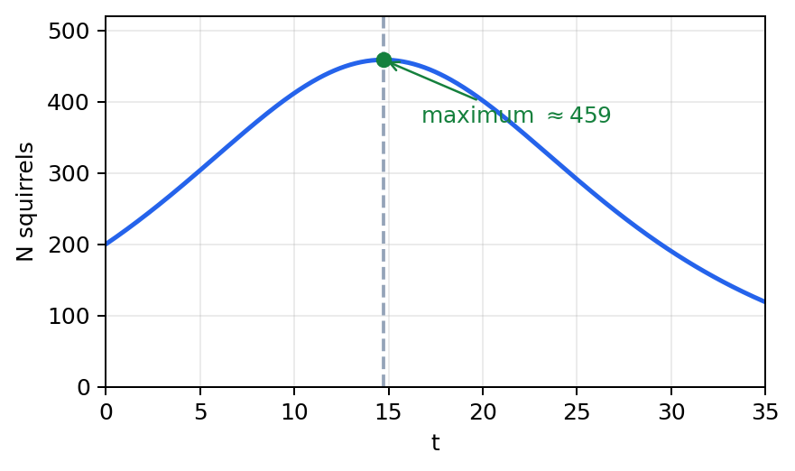

P3 October 2025 · Q5 — squirrels model and maximum
From the paper. \(N=\dfrac{4000e^{0.1t}}{19+e^{0.2t}},\quad t\ge0\). Use the equation of the model to answer parts (a), (b), (c) and (d). (a) Find the number of squirrels at the start of the study. (b) Find \(\dfrac{dN}{dt}\). (c) At the maximum \(t=T\), show \(e^{0.2T}=A\) (find \(A\)). (d) Find the maximum number of squirrels, to the nearest whole number. Show all stages of working.
Substitute the initial time exactly before simplifying.
\(N=\dfrac{4000e^0}{19+e^0}=\dfrac{4000}{20}=200\).
Sense check: the denominator is \(19+1\), not 19.
Use the formula-book quotient rule and preserve the subtraction.
Formula: \(\left(\dfrac uv\right)'=\dfrac{vu'-uv'}{v^2}\).
\(u'=400e^{0.1t}\), \(v'=0.2e^{0.2t}\).
\(\dfrac{dN}{dt}=\dfrac{(19+e^{0.2t})(400e^{0.1t})-(4000e^{0.1t})(0.2e^{0.2t})}{(19+e^{0.2t})^2}\).
\(=\dfrac{7600e^{0.1t}-400e^{0.3t}}{(19+e^{0.2t})^2}\).
Sense check: \(e^{0.1t}e^{0.2t}=e^{0.3t}\).
At a maximum, set the derivative to zero; only the numerator can be zero.
\(7600e^{0.1T}-400e^{0.3T}=0\).
\(e^{0.1T}(7600-400e^{0.2T})=0\).
Since \(e^{0.1T}>0\), \(7600-400e^{0.2T}=0\), so \(e^{0.2T}=19\).
Sense check: exponential values never equal zero.

Use the exact stationary relation directly in the model; it avoids rounding \(T\).
\(N=\dfrac{4000\sqrt{19}}{19+19}=\dfrac{4000\sqrt{19}}{38}=458.831467\ldots\).
Final check: round only the requested final population.
Retrieve the symbolic route before substituting numbers.
1. Read the command. “Show that” ends at the displayed result; “exact” forbids an early decimal; “rate” asks for a derivative; “smallest” requires checking the first valid solution.
2. Formula first. Write a named formula or identity symbolically, then substitute. Relevant lesson formulae were \(4\pi R^2\), \(2\pi r^2+2\pi rh\), \(\frac{d}{dx}a^{kx}=a^{kx}k\ln a\), \(\left(\frac uv\right)'=\frac{vu'-uv'}{v^2}\), and the R-form coefficient relations \(R\cos\alpha=a,\ R\sin\alpha=b\).
3. Preserve the carry-in. Treat each displayed carry-in as known while the earlier grey working is covered. State the new equation created from it rather than referring vaguely to an earlier part.
4. Final check. Check signs, domain or positivity, units where applicable, and the requested rounding. Keep stored values until the final requested precision.
Formula discrimination. Surface area is not volume: a closed cylinder needs two circular ends and a curved side. A logarithm model must be converted before identifying an exponential base. In a quotient, differentiate both numerator and denominator before simplifying. In an R-form question, use coefficient matching before choosing an inverse trigonometric function.
Exactness discipline. A calculator value may support a final decimal, but it should not replace an exact surd, logarithm, or trigonometric angle when the question asks for an exact value. Keep \(10^{0.05}\), \(\sqrt{19}\), and fractional multiples of \(\pi\) visible until the final line.
Domain discipline. A root used as a radius must be positive; an IVT conclusion needs continuity on the stated interval; a denominator declared positive can be cancelled only after that fact is stated; and a “smallest positive” trig solution must satisfy the stated domain.
One-line finish. Write the requested result with its unit, interval, or qualifying condition. A correct calculation without the final conclusion can leave an exam response incomplete. Then compare: the symbolic answer should retain every requested condition and no earlier rounded approximation. Use a complete concluding sentence. State what has been established.